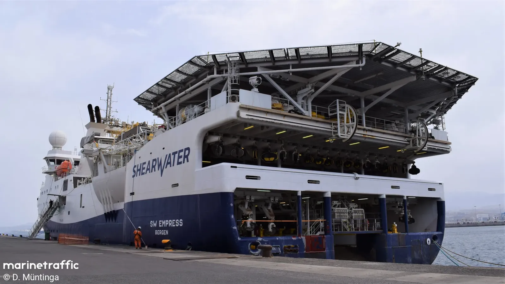
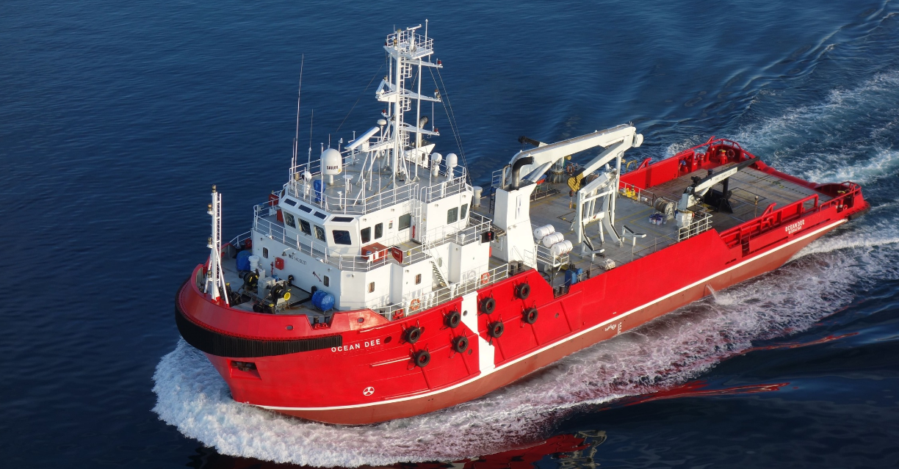
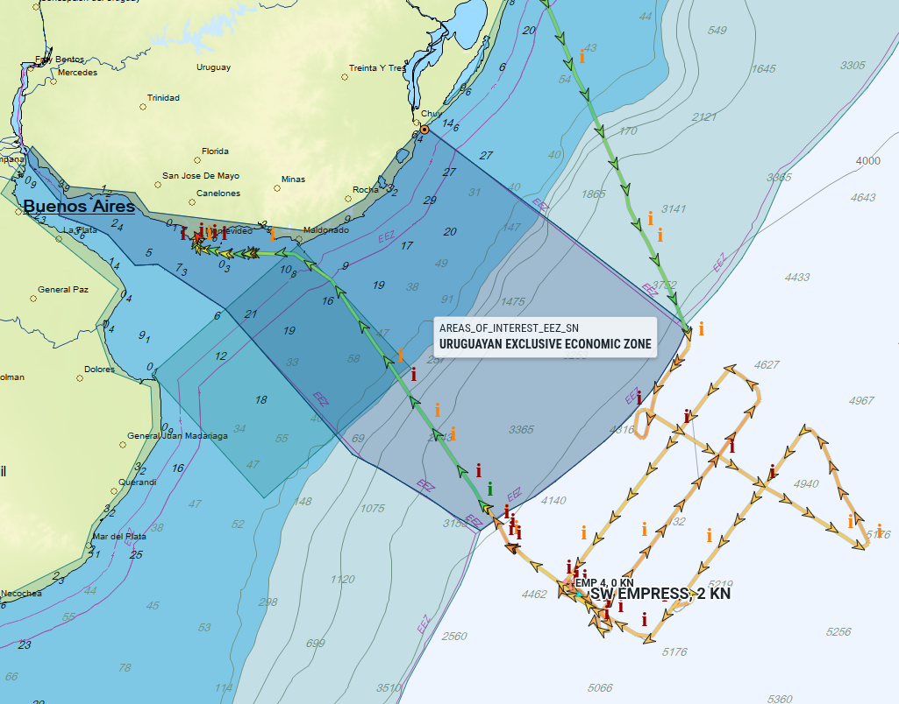
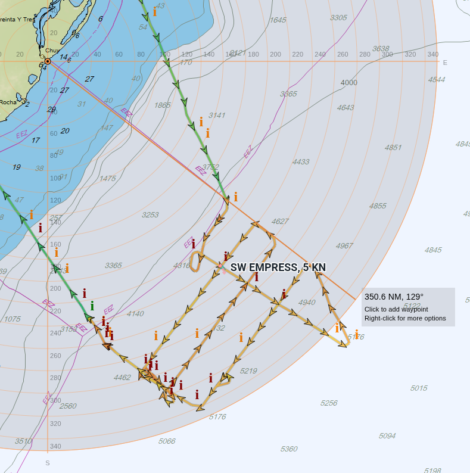
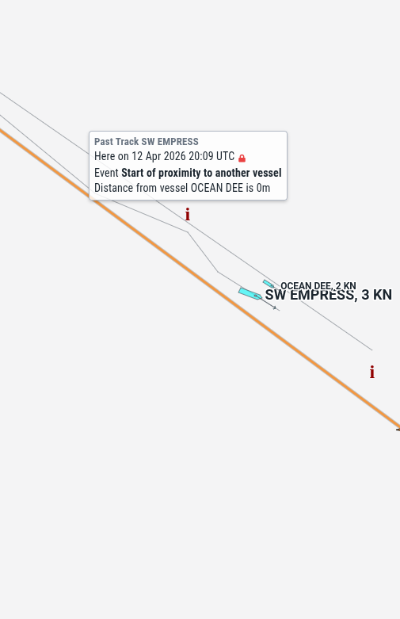

SW EMPRESS: Prospección Sísmica en la Plataforma Continental Uruguaya
17 de abril de 2026
Acusan de hacer exploración sísmica en la zona económica exclusiva (ZEE) de Uruguay 🇺🇾 al buque de bandera noruega 🇳🇴 SW Empress.
Reconstrucción del viaje desde datos AIS
Los datos del Sistema de Identificación Automática (AIS) permiten reconstruir el recorrido del buque entre el 2 y el 14 de abril de 2026.
| Fecha | Evento |
|---|---|
| 2 ABR | Sale del Puerto de Rio Grande 🇧🇷 — destino AIS declarado: OFFSHORE URUGUAY |
| 3 ABR | Cambia estado AIS a Restricted Manoeuvrability en aguas del Atlántico Sur — posiblemente el inicio de las operaciones sísmicas |
| 3–13 ABR | Permanece en estado Restricted Manoeuvrability; navega a baja velocidad (2–4 nudos) en la zona de trabajo |
| 12–13 ABR | El buque de apoyo OCEAN DEE 🇳🇴 opera en las inmediaciones — múltiples eventos de proximidad registrados en AIS |
| 13 ABR | Cruza el límite de la ZEE uruguaya de 200 mn; cambia estado a Underway using Engine y acelera hacia Montevideo |
| 14 ABR | Arriba al Puerto de Montevideo 🇺🇾 |
Recorrido del SW EMPRESS (2–17 ABR 2026) · Datos: MarineTraffic AIS Export · Pasar el cursor sobre el track para ver velocidad
Inicio de trabajos: cambio de estado a "Restricted Manoeuvrability"
El 3 de abril, el buque cambia su estado AIS de Underway using Engine a Restricted Manoeuvrability en las coordenadas 36°36'S, 50°30'W.
El estado Restricted Manoeuvrability (Maniobra Restringida) es el estatus AIS que los buques sísmicos utilizan durante las operaciones de trabajo activo. Indica que el buque no puede maniobrar libremente porque está arrastrando equipos (streamer sísmico, air guns), lo que limita su capacidad de respuesta ante otras embarcaciones.
Este cambio de estado es consistente con el inicio de operaciones sísmicas activas, aunque no es posible confirmarlo con certeza solo a partir del AIS. La posición registrada en ese momento queda fuera de las 200 millas náuticas de la ZEE uruguaya.
Zona de trabajo
Durante aproximadamente diez días (3 al 13 de abril), el SW Empress mantuvo estado Restricted Manoeuvrability navegando a velocidades bajas (2–4 nudos). Este patrón —velocidad reducida, rumbos paralelos, posición sostenida— es compatible con operaciones de adquisición sísmica, aunque el AIS por sí solo no permite confirmar qué actividad específica se realizaba.
Según las coordenadas registradas, el área de operación se encontraría en el rango aproximado de 270 a 320 millas náuticas desde las líneas de base uruguayas — dentro de la zona en disputa entre el límite de las 200 mn (ZEE) y el de las 350 mn (plataforma continental extendida reconocida por la ONU en 2016).
El barco
El SW EMPRESS: buque de prospeccion sismica

SW EMPRESS
El SW Empress (IMO: 9306026) es un buque sísmico de bandera noruega operado por Shearwater GeoServices, especializado en adquisición de datos sísmicos 2D y 3D. Fue contratado por la empresa Searcher para realizar un relevamiento de la plataforma continental en el Atlántico Sur.
El OCEAN DEE: buque de apoyo sísmico

OCEAN DEE y SW EMPRESS en los datos AIS
El 12 y 13 de abril, los datos AIS registran múltiples eventos de proximidad entre el SW Empress y el OCEAN DEE (también de bandera noruega, operado por Atlantic Offshore).
El OCEAN DEE es un seismic support vessel de Atlantic Offshore (ver flota), diseñado para asistir a buques sísmicos en operaciones de campo. Su presencia en las inmediaciones reforzaría la hipótesis de que las operaciones del 12 y 13 de abril seguían activas, aunque no es posible determinarlo con certeza a partir del AIS.
Ingreso a la ZEE de 200 mn y fin de trabajos
El 13 de abril, el SW Empress entra a la Zona Económica Exclusiva de Uruguay (200 mn) en las coordenadas 37°43'S, 52°30'W, rumbo norte. En ese momento todavía registra estado Restricted Manoeuvrability y velocidad de 3–4 nudos — lo que podría indicar que las operaciones continuaban ya dentro de la ZEE convencional.
Horas más tarde, cambia su estado AIS de Restricted Manoeuvrability a Underway using Engine en las coordenadas 36°57'S, 53°10'W, y acelera a 13 nudos. El salto de velocidad sugiere el fin de las operaciones y el inicio del tránsito hacia Montevideo. En ese mismo momento, el destino AIS cambia de OFFSHORE URUGUAY a MONTEVIDEO.
Llegada a Montevideo
El 14 de abril, el SW Empress arriba al Puerto de Montevideo, asistido por los remolcadores VB Tero y VB Tannat. Permanece atracado en el puerto.
El debate de límites: 200 mn vs 350 mn
El núcleo del conflicto es una disputa sobre qué norma aplica en la zona donde operó el buque.
Postura oficial — Cancillería y Ministerio de Ambiente
En 2016, la Comisión de Límites de la Plataforma Continental de las Naciones Unidas (CLPC/CLCS) aprobó la extensión de la plataforma continental uruguaya hasta las 350 millas náuticas desde las líneas de base. Esto significa que Uruguay ejerce derechos soberanos sobre el lecho y subsuelo marino en esa zona extendida, independientemente de si las aguas suprayacentes son internacionales. Cualquier actividad de exploración o explotación del subsuelo en esa zona requeriría autorización uruguaya.
Postura de ANCAP y Searcher
La gerencia de ANCAP y la empresa Searcher sostienen que, al no existir una ley del Parlamento uruguayo que ratifique internamente el límite de las 350 mn, la zona entre las 200 y las 350 mn sigue siendo jurídicamente tratada como aguas internacionales a efectos prácticos. Esto sustenta la afirmación —publicada brevemente en el sitio de ANCAP el 6 de abril y luego eliminada— de que el buque operó en "aguas internacionales".
Según los datos AIS, el área principal de trabajo del SW Empress se ubicaría fuera de las 200 mn pero dentro del límite de 350 mn reconocido por la ONU. Eso coloca las operaciones exactamente en el centro de la disputa jurídica.
Mapas

Recorrido completo (MarineTraffic) — ZEE 200 mn

Recorrido completo (MarineTraffic) — proyección ZEE 350 mn

Conclusión técnica
Lo que los datos AIS muestran de forma objetiva es que el SW Empress mantuvo estado Restricted Manoeuvrability durante aproximadamente diez días en una zona que, según el aval de la ONU de 2016, formaría parte de la plataforma continental sobre la que Uruguay reclama derechos soberanos.
La presencia del OCEAN DEE, un buque de apoyo sísmico, sugiere que no se trató de un tránsito casual sino de una operación planificada.
Lo que los datos AIS no pueden confirmar por sí solos es la naturaleza exacta de las actividades realizadas ni si existían autorizaciones de algún tipo. Esa es materia de la investigación en curso.